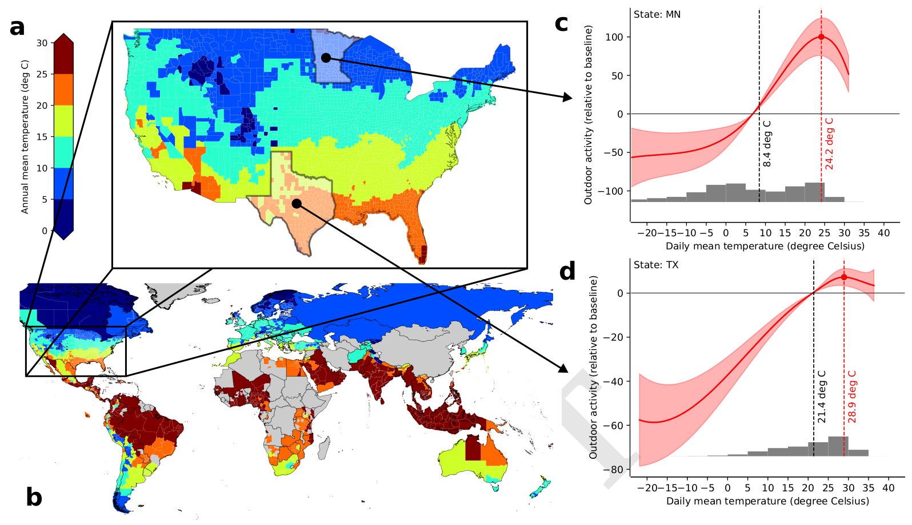
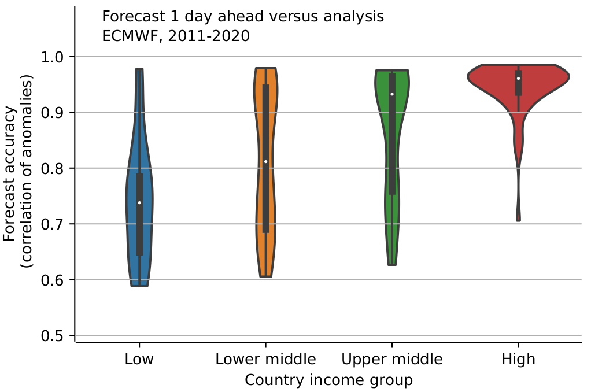
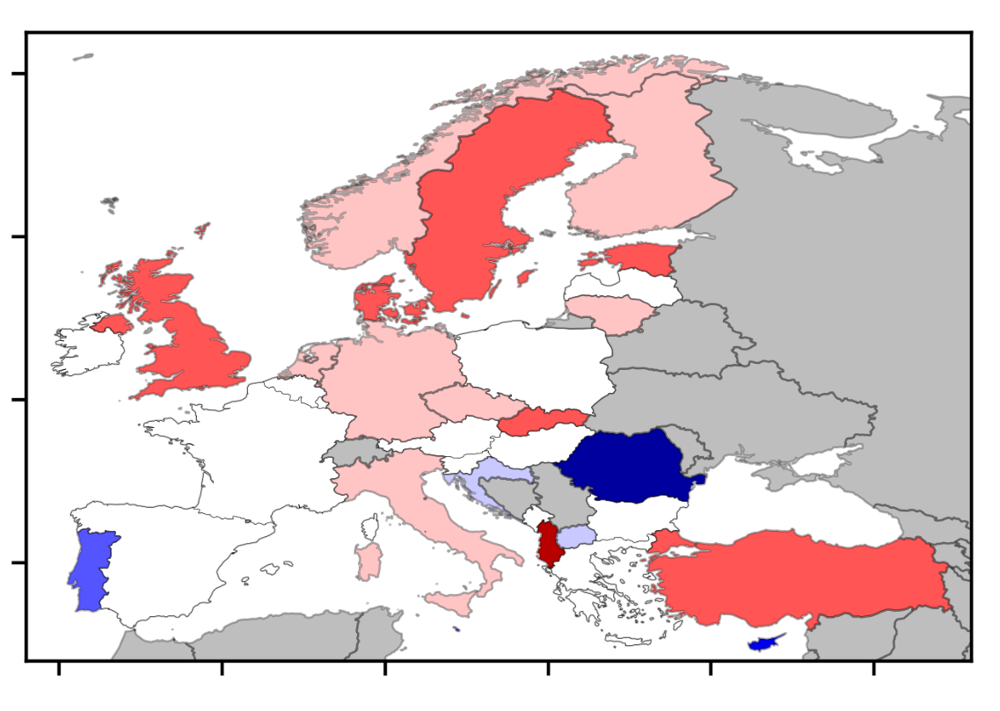
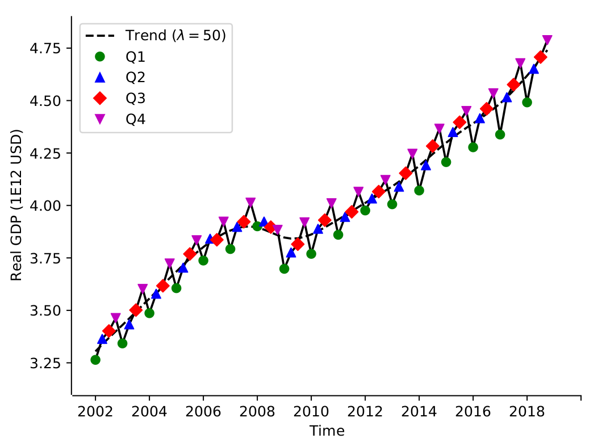
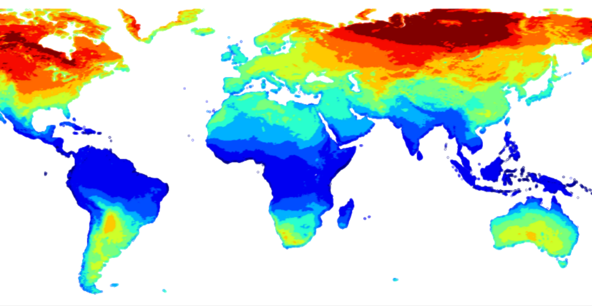
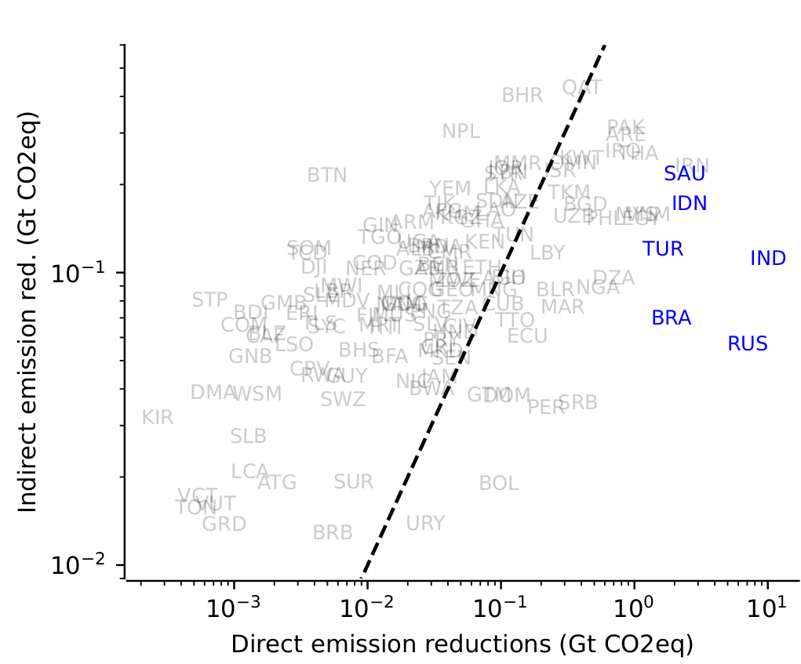
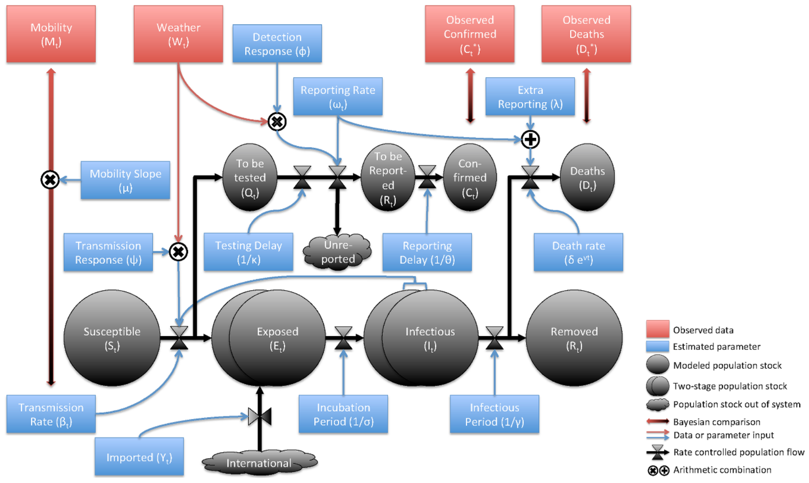
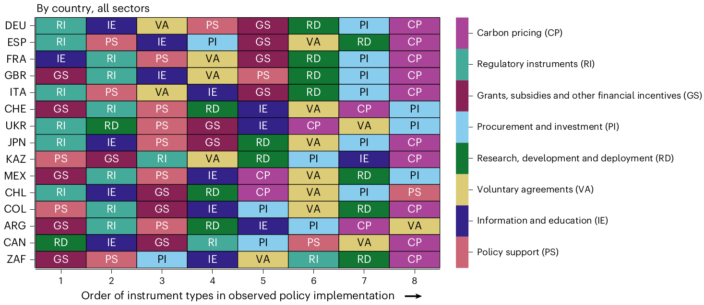

Global variation of the optimal temperature for outdoor activity
Most recent version: available upon request

The impacts of climate change on human societies will depend on how well they adapt to higher temperatures. However, adaptation is difficult to measure and often not considered in climate change cost estimates. Here we examine whether people living in warmer countries prefer higher temperatures for outdoor activities. We analyze a unique dataset of mobile phone usage covering two and a half years and over 5000 locations across 130 countries. By exploiting quasi-random weather variations, we derive country-specific dose-response functions and identify the temperature levels at which outdoor activity peaks. We then investigate the relationship between these locally optimal temperatures and annual mean climate. Our findings suggest that while there is substantial adaptation to climatic conditions, it is only partial. Specifically, for every degree Celsius increase in annual mean temperature, the optimal temperature for outdoor activity increases by about 0.5 degrees Celsius.The unequal global distribution of weather forecast accuracy
with Jeffrey Shrader
Most recent version: available upon request

Global weather forecasts are of great economic value for society, but regional differences in forecast accuracy can create new and potentially exacerbate existing economic inequalities. Regional differences in forecast accuracy are particularly relevant if weather forecasts are considered as an important tool to reduce some of the negative effects of future climate change such as mortality from extreme temperature events. In this study, we provide a comprehensive global analysis of the accuracy of short-term temperature forecasts and relate our findings to existing economic inequalities and the role of the global infrastructure of weather stations. We find three main results: First, temperature forecasts are currently substantially more accurate in high income countries compared to low income countries. The average forecast accuracy for high-income countries is more than 25% higher than the average accuracy in low-income countries. Second, after a period of converging forecast quality during the late 1980s and 1990s, forecast accuracy has strongly diverged across countries in different income groups for the last two decades. This effect is largely driven by a rapid decline in forecast accuracy in low-income countries between the late 1990s and mid 2000s. Decline in quality and divergence across regions stands in sharp contrast to the average improvements in global forecast quality that have been witnessed in recent decades. Third, the difference in forecast quality is strongly correlated with differences in the density of weather stations - a piece of public infrastructure that exhibits high inequality across countries and which is an important input into forecasts.Some Like It Cold: The Persistent Cost of Higher Temperatures in European Economic Sectors
with Ben Groom and Sefi Roth
Most recent version: available upon request

Econometric analysis of the global impact of temperature fluctuations on Gross Domestic Product (GDP) suggests a generalised coupled-climate-economy relationship in which higher temperatures harm warm countries, benefit cooler ones and an "optimal" temperature exists in between. However, aggregate temperature-GDP relationships reflect an average across different spatial scales and sectors of the economy, thereby masking any underlying heterogeneity. Ignoring such heterogeneity could misrepresent the overall costs or benefits of temperature change and provide misleading guidance for mitigation and adaptation policies. Focusing on Europe, we use administrative district level data on the growth rate of Gross-Value Added (GVA) and GDP to estimate the impact of temperature fluctuations on economic growth at the national level, the district level, and by industry. Unlike previous studies with a global focus, for Europe we find negative effects of warmer-than-average years on GVA and GDP in relatively cold districts. In warmer regions warmer-than-average years tend to increase economic output. Warmer temperatures only benefit extremely cold districts and are only costly to extremely warm districts. Disaggregating by economic sector, the negative temperature effect in cold countries stems primarily from the production of goods (e.g. agriculture and construction) not services. Disaggregating by district, the marginal temperature effects are highly heterogeneous, even within countries. Overall, our results invert the narrative that warmer than average temperature will be economically advantageous to colder regions, point to regional vulnerabilities stemming from specialisation, and suggest local temperature optima not a global one.Seasonal temperature variability and economic cycles
Accepted in: Journal of Macroeconomics
Most recent version: here

In this paper, we examine the role of temperature as a fundamental driver of seasonal economic cycles. We first construct a novel dataset of seasonal GDP and seasonal temperature for a sample of 81 countries. This dataset reveals a much larger diversity of seasonal economic cycles around the world than previously reported. We then attribute these economic cycles to variation in temperature. For identification, we propose and apply a novel econometric approach that accounts for expectations and is based on seasonal differences. The results suggest that seasonal temperature has a statistically significant positive effect on seasonal GDP. The effect appears large, as seasonal temperature can explain a substantial share of the variation in seasonal GDP. Using data on GVA for different industry groups we can attribute this effect to industries that are relatively more exposed to ambient temperature. Furthermore, the results suggest that economic development makes countries more resilient to seasonal temperature fluctuations. Regarding future anthropogenic climate change, the results suggest that changes to seasonal temperatures will lead to a reallocation of economic activity from one season to another similar in size to current seasonal economic cycles, pointing to a channel through which climate change will affect economic production that has so far been overlooked.Temperature variability and long-run economic development
Published in: Journal of Environmental Economics and Management, 2023

This study examines the effects of temperature variability on long-run economic development. To identify causal effects, a novel econometric strategy is employed, based on spatial first-differences. Economic activity is proxied by satellite data on nightlights. Drawing on climate science, the study distinguishes between temperature variability on three time scales: day-to-day, seasonal, and interannual variability. The results indicate that day-to-day temperature variability has a statistically significant, negative effect on economic activity, while seasonal variability has a smaller but also negative effect. The effect of interannual variability is positive at low temperatures, but negative at high temperatures. Furthermore, the results suggest that daily temperature levels have a non-linear effect on economic activity with an optimal temperature around 15 degrees Celsius. However, most of the estimated effects of variability cannot be explained with this non-linearity and instead seem to be due to larger uncertainty about future temperature realisations. The empirical effects can be found in both urban and rural areas, and they cannot be explained by the distribution of agriculture. The results indicate that projected changes of temperature variability might add to the costs of anthropogenic climate change especially in relatively warm and currently relatively poor regions.Global benefits of the international diffusion of carbon pricing policies
with Adil Mohommad and Gregor Schwerhoff
Published in: Nature Climate Change, 2023

In this paper, we study the international diffusion of carbon pricing policies. In the first part, we empirically examine to what extent the adoption of carbon pricing in a given country can explain the subsequent adoption of the same policy in other countries. In the second part, we quantify the global benefits of policy diffusion in terms of greenhouse gas emission reductions elsewhere. To do so, we combine a large international dataset on carbon pricing with several other datasets. For causal identification, we estimate semi-parametric Cox proportional hazard models. We find robust and statistically significant evidence for policy diffusion. The magnitude of the estimated effects is substantial. For two neighbouring countries, policy adoption in one country increases the probability of subsequent adoption in the other country on average by several percentage points. Motivated by this result, we use Monte Carlo simulations based on our empirical estimates to quantify both direct domestic and indirect foreign emission reductions of policy adoption and subsequent diffusion. The results based on our central empirical estimates suggest that for most countries indirect emission reductions of carbon pricing can exceed direct emission reductions. Overall, our results provide additional support for the adoption of stringent climate policies, especially in countries where climate change mitigation policies might so far have been considered as being of relatively little importance because of a relatively small domestic economy.Weather drives variation in COVID-19 transmission and detection
with Ana De Menezes-Silva and James Rising
Published in: Environmental Research: Climate, 2023

The debate over the influence of weather on COVID-19 epidemiological dynamics remains unsettled as multiple factors are conflated, including viral biology, transmission through social interaction, and the probability of disease detection. Here we disentangle these dynamics with a multi-method approach combining econometric techniques with epidemiological models to analyze data for over 4000 geographic units. We show distinct and significant effects of temperature, thermal comfort, solar radiation, and precipitation on the growth of infections. We find that weather affects the rates of both disease transmission and detection, and we isolate transmission effects to understand the potential for seasonal shifts. The instantaneous effects of weather are small, with R0 about 0.007 higher in winter than summer. However, these effects compound over time, so that a region with a 5 C drop over three months in winter is expected to have 190% more confirmed cases at the end of that 90 days period, relative to constant temperature. We also find that the contribution of weather produces the largest effects in high-latitude countries. As the COVID-19 pandemic continues to evolve and risks becoming endemic, these seasonal dynamics may play a crucial role for health policy.Policy sequencing towards carbon pricing among the world’s largest emitters
with Adil Mohommad and Gregor Schwerhoff
Published in: Nature Climate Change, 2022

Carbon pricing is considered the most efficient policy to reduce greenhouse gas emissions but it has also been conjectured that other policies need to be implemented first to remove certain economic and political barriers to stringent climate policy. Here, we examine empirical evidence on the the sequence of policy adoption and climate policy portfolios of G20 economies and other major emitters that eventually implemented a national carbon price. We find that all countries adopted carbon pricing late in their instrument sequence after the adoption of (almost) all other instrument types. Furthermore, we find that countries that adopted carbon pricing in a given year had significantly larger climate policy portfolios than those that did not. In the last part of the paper, we examine heterogeneity among countries that eventually adopted a carbon price. We find large variation in the size of policy portfolios of adopters of carbon pricing, with more recent adopters appearing to have introduced carbon pricing with smaller portfolios. Furthermore, countries that adopted carbon pricing with larger policy portfolios tended to implement a higher carbon price. Overall, our results thus suggest that policy sequencing played an important role in climate policy, specifically the adoption of carbon pricing over the last two decades.